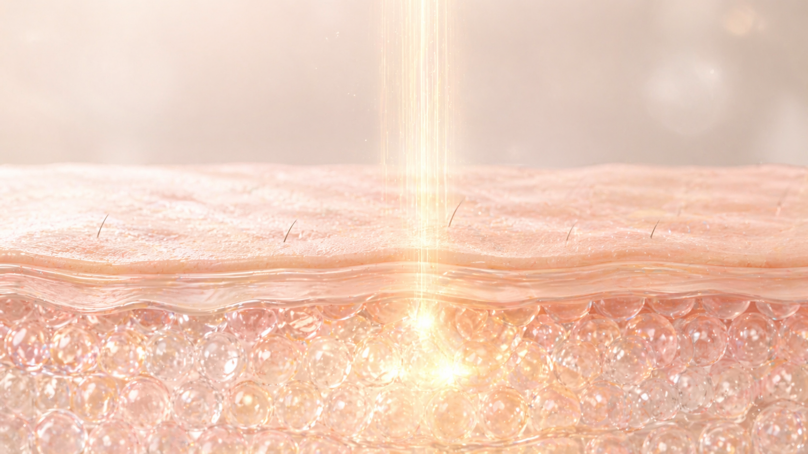
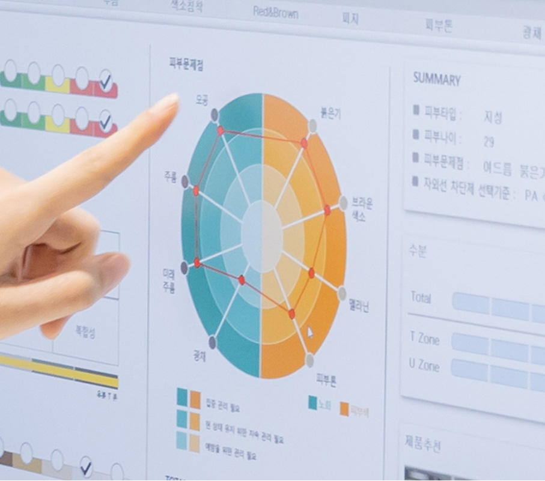
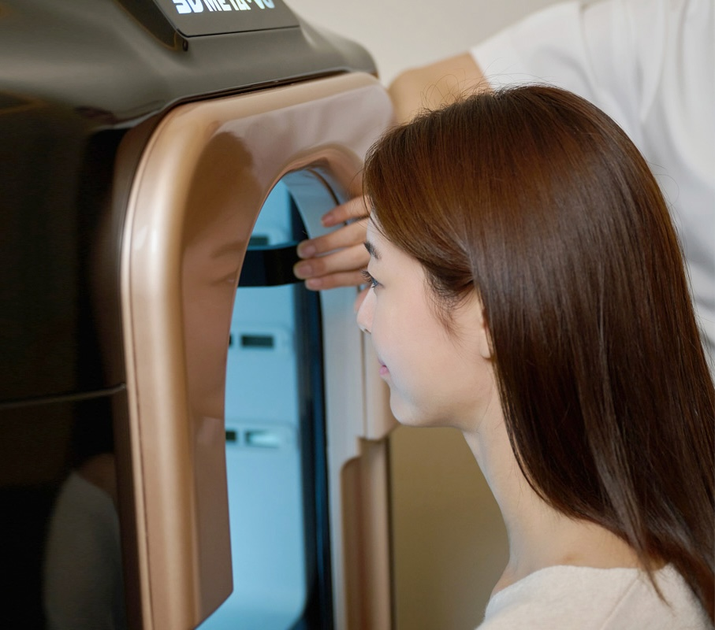
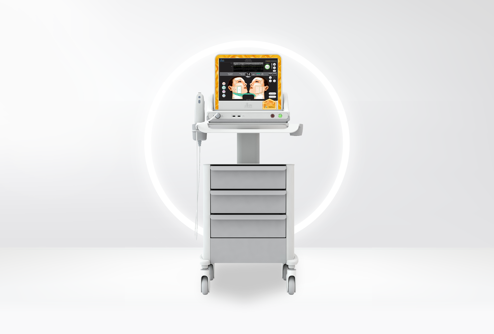
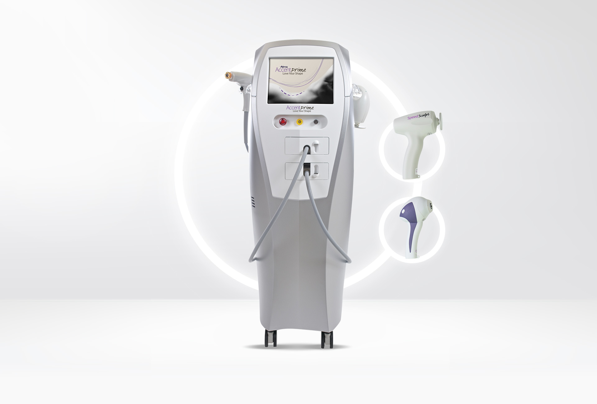
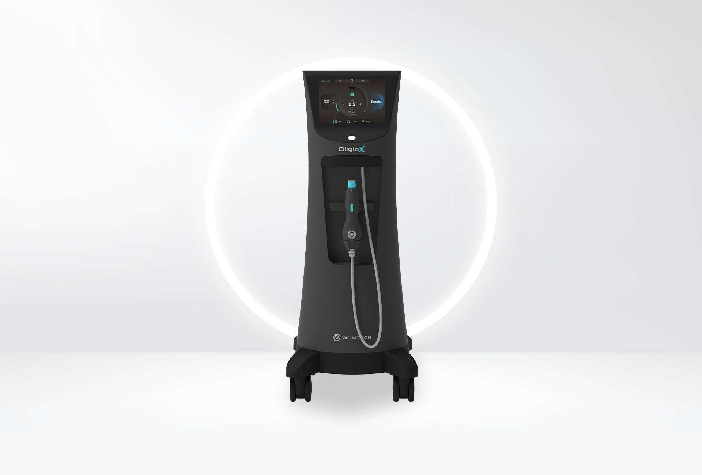
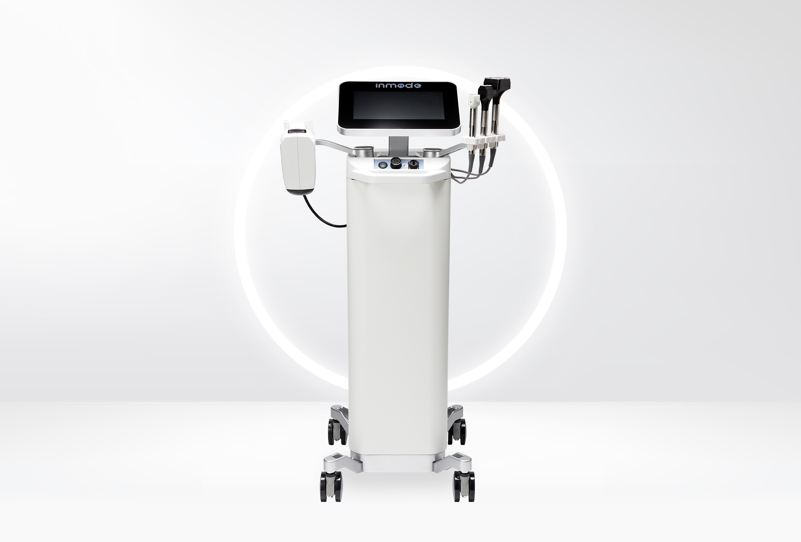
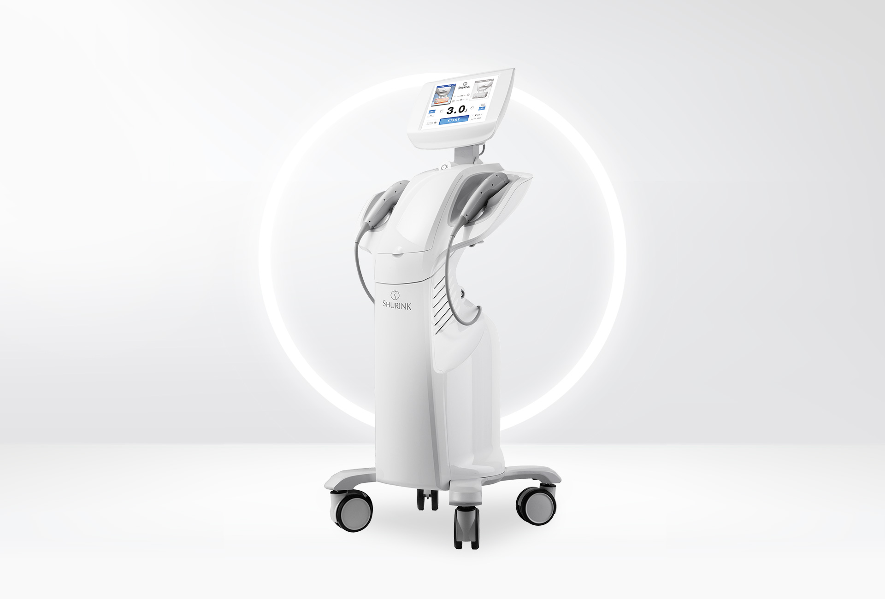
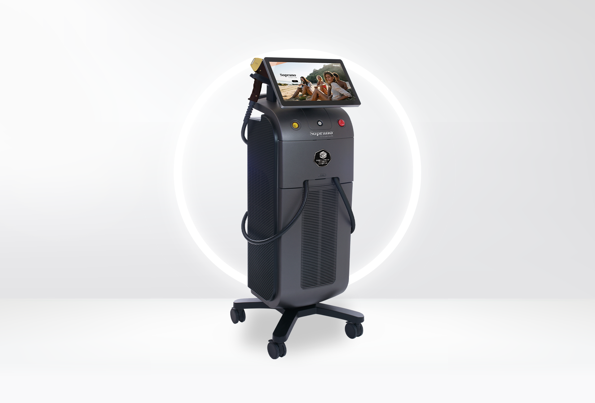

— 01 / 05
Diagnosis first.
We read the face before we choose the device. Skin thickness, SMAS position, fat distribution, and aging pattern — analyzed first, treated second.
Time is the only thing
that doesn't lift back.
We do the rest.
At Mili Clinic Sinchon, no two protocols are identical. The face is read before the device is chosen. Energy is layered, not stacked. Restraint is part of the design.
Every shot is delivered by the attending physician, and every session ends where the face says enough.
Lifting is not a device. It is a sequence of decisions — what to read, what to layer, where to stop. Five principles guide every protocol at Mili Clinic Sinchon.
We read the face before we choose the device. Skin thickness, SMAS position, fat distribution, and aging pattern — analyzed first, treated second.

SMAS, dermis, fascia — each layer responds to a different energy. We combine devices the way a tailor combines stitches: precise, intentional, layered.
Every shot is delivered by the physician. No delegation, no shortcuts. The angle, the depth, the count — all decided in real time, by the person reading the face.
More energy is not more lifting. We place shots where the face actually needs them — and stop where it doesn't. Restraint is part of the design.

No pulled look. No obvious tightness. The face is the same face — only clearer, more defined, more rested. The result speaks softly.
Skin is built in layers — and each layer ages differently. A single device cannot reach all of them. We read each layer separately and choose the energy that belongs to it.
The outermost layer. Tone, texture, brightness live here. Lifting energy does not stop here, but skin quality is judged at this surface — so it is conditioned, not treated.
Where collagen lives. Heating this layer triggers neocollagenesis — the slow remodelling that thickens skin and softens fine lines. The energy must be precise: enough to provoke, not enough to scar.
The structural net beneath the face. When this layer descends, the lower face descends with it. Focused ultrasound and high-intensity RF reach this depth without breaking the skin above — the foundation of true lifting.
Beyond the SMAS lies volumetric heating — the contour of the lower face, the jawline, the submental line. Reached selectively, with a different generation of energy, and only when the face calls for it.
Every face is read before it is treated. Every protocol is built before a single shot is delivered. Three steps, every time, by the same doctor — from the first reading to the last pulse.

We measure what cannot be seen — skin thickness, SMAS depth, elasticity, fat distribution. The face is read with diagnostic imaging and a clinician's eye before any energy is chosen.
From seven available technologies, the doctor selects the combination this face requires. Layer by layer — SMAS, dermis, surface. The protocol is drawn before the room is entered.
Every shot is delivered by the physician, in real time, with adjustments made as the face responds. No assistant performs the lifting. The result is the work of the hand that read the face.
No single device lifts a face. We hold every major lifting technology in one room — and choose the combination this face requires. The lineup is the language; the protocol is the sentence.

The gold standard. Focused ultrasound to the SMAS — the deepest lifting energy a non-invasive device can reach.

Microfocused ultrasound with adjustable density. A finer lifting language for faces that need precision over power.

Monopolar radiofrequency that heats volumetrically — softening the lower face and tightening skin from within.

A platform that pairs RF with light energy. Layered tone, texture, and surface lifting in a single visit.

High-intensity focused ultrasound across three depths. A dependable lifting baseline that pairs with every protocol.

Deep monopolar RF for volumetric heating. Reaches structural depth where ultrasound stops — a complement, not a competitor.
Five common questions about lifting at Mili Clinic Sinchon. More specific concerns are best addressed during consultation.
Book a diagnostic consultation. The first thirty minutes are spent on the face — not on the menu.